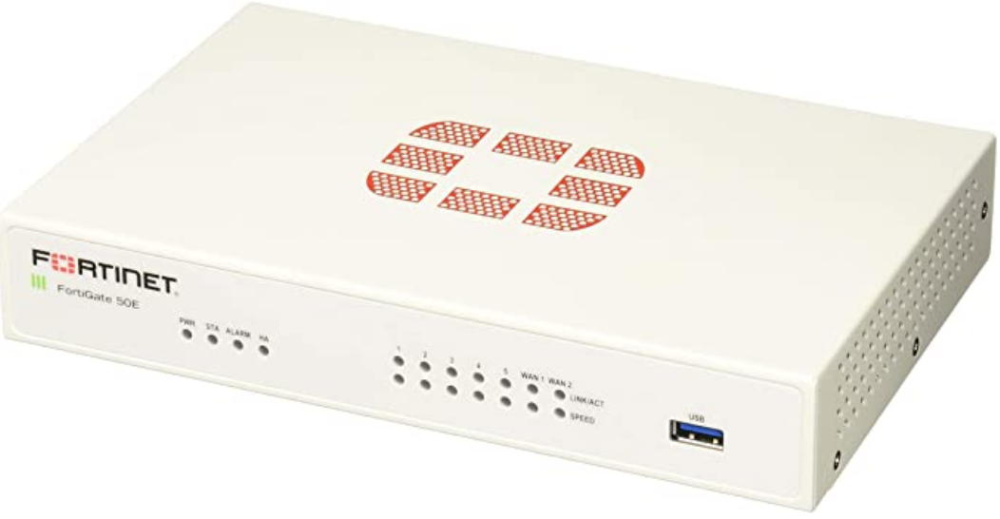
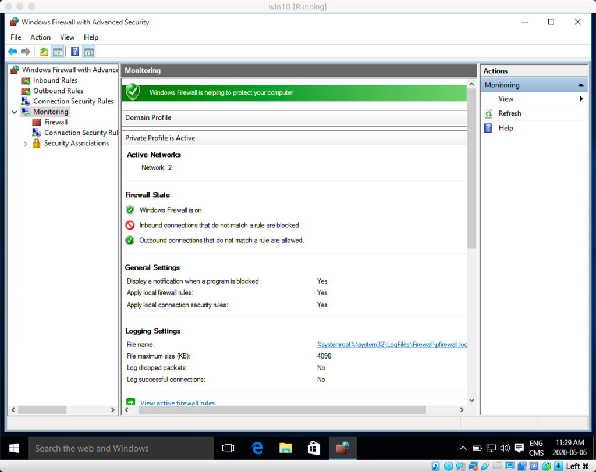
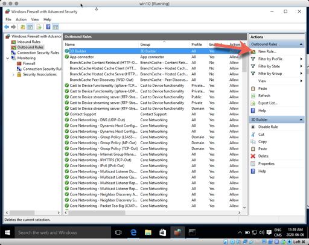
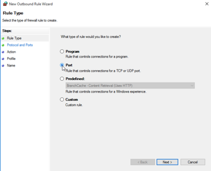
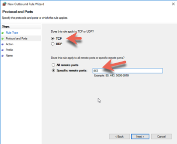
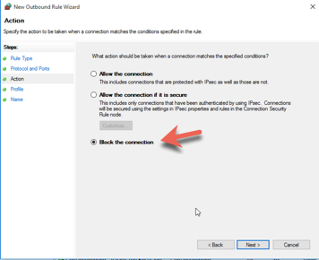
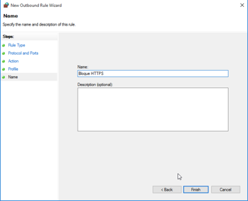

Les pare-feux
Définition de wikipedia :
Un pare-feu est un logiciel et/ou un matériel permettant de faire respecter la politique de sécurité du réseau, celle-ci définissant quels sont les types de communications autorisés sur ce réseau informatique. Il surveille et contrôle les applications et les flux de données (paquets).
Types de pare-feux :
- Pare-feu sans état (stateless firewall)
- Pare-feu à états (stateful firewall)
- Pare-feu applicatif
- Pare-feu personnel

Un pare-feu est typiquement utilisé entre des zones réseaux de différentes natures. (ex: Internet vs réseau interne)
Pare-feu sans état
Un pare-feu très simpliste. Il agit sur chaque paquet indépendamment, sans tenir compte du protocole. Se configure avec des règles ou des filtres.
Ex:
Source : 10.0.0.0/24 Port : Tous
Destination : 192.168.0.1 Port : 80
Règle : Permettre (allow)
Pare-feu avec état
Un pare-feu avec une certaine capacité à se souvenir. En effet, les pare-feux avec état conservent en mémoire les conversations TCP qui sont établies entre deux hôtes pour mieux contrôler le trafic entre les segments de réseau.
Pare-feu applicatif
Un pare-feu avec une bonne connaissance de certains protocoles, permettant des règles de filtres évoluées pour restreindre ce qui peut passer, selon l'utilisation du protocole utilisé. Par exemple, la commande GET de HTTP pourrait être permise, mais pas la commande PUT.
Pare-feu personnel
Un type de pare-feu avec état qui est installé sur les postes de travail.
Pare-feu matériel

Grands manufacturiers de pare-feux :
- Cisco
- Juniper
- Fortinet
- CheckPoint
- SonicWall
Appareils spécialisés qui n'ont qu'une fonction, protéger le réseau interne d'une compagnie.
Pare-feu logiciel
Windows
Le pare-feu de Microsoft Windows est un pare-feu personnel.

Le pare-feu de Windows peut filtrer selon :
- Le port
- L'application
Pour créer un règle qui empêche le trafic sur 443 :






Linux
Voici quelques pare-feux disponibles pour Linux :
- IPTables
- ShoreWall
- UFW (Uncomplicated FireWall)
- pfSense
- Endian
Pour le cours, UFW sera utilisé.
Pour l'installation :
sudo apt-get install ufw
Pour vérifier le status du pare-feu :
sudo ufw status
Pour activer le pare-feu :
sudo ufw enable
Pour désactiver le pare-feu :
sudo ufw disable
Pour permettre un protocole spécifique (ex: ssh) :
sudo ufw allow ssh
(Ça permet ssh sur tcp et udp) Pour tcp seulement :
sudo ufw allow ssh/tcp
Pour voir la liste des services que connait UFW :
less /etc/services
Pour restreindre un protocole spécifique (ex: ftp) :
sudo ufw deny ftp
Pour effacer une règle :
sudo ufw delete deny ftp
Pour permettre un port spécifique (ex: 8080) :
sudo ufw allow 8080
Pour permettre un actif spécifique de se connecter à n'importe quel port :
sudo ufw allow from 192.168.2.10
En combinant, on peut faire une règle plus spécifique :
sudo ufw allow from 192.168.2.10 to any port ssh
Pour voir la liste des règles numérotées :
sudo ufw status numbered
Pour effecer une règle par son numéro :
sudo ufw delete 3
Pour réinitialiser le pare-feu :
sudo ufw reset
Méthode pour configurer un pare-feu :
- Assurez-vous que la règle par défaut est de restreindre (deny)
- N'ouvrez que les ports qui sont nécessaires, que pour les clients nécessaires.
Ex : Pour un serveur Web utilisé qu'à l'interne de notre sous-réseau.
sudo ufw reset
sudo ufw default deny
sudo ufw allow from 192.168.40.0/24 to any port http
sudo ufw allow from 192.168.40.0/24 to any port https
sudo ufw enable